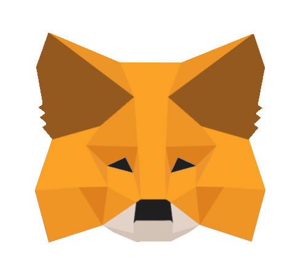

Blockchain development is in its very early stages right now, so programmers are creating applications and solutions that just do-the-job-for-now. That is to say, some of these things won't be around forever, and they're just acting as a stop-gap until the community figures out what to do next.
Metamask is one of these solutions, a bridge between where we are now, and where we want to be in a few years.
When you go to a website that is connected to a blockchain, the website expects every user to also be connected to the blockchain. Most internet browsers (like Chrome or Firefox) do not have any built-in blockchain capabilities yet, but this will likely change in the future. In order to bridge this gap, users need to install Metamask, a browser extension that allows the browser to communicate with the blockchain.
Another thing that Metamask can do is act as a crypto-wallet (a digital wallet that holds your cryptocurrency). This is handy since it removes the need to install complicated desktop wallet software.